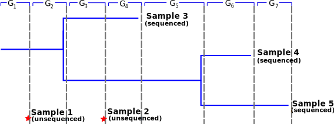
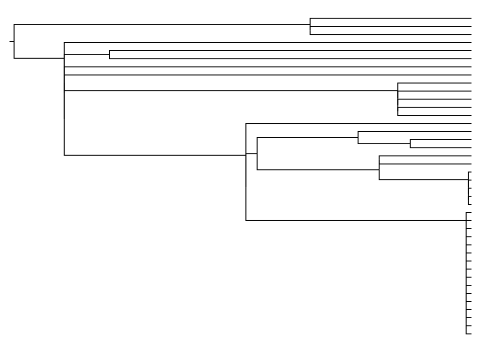
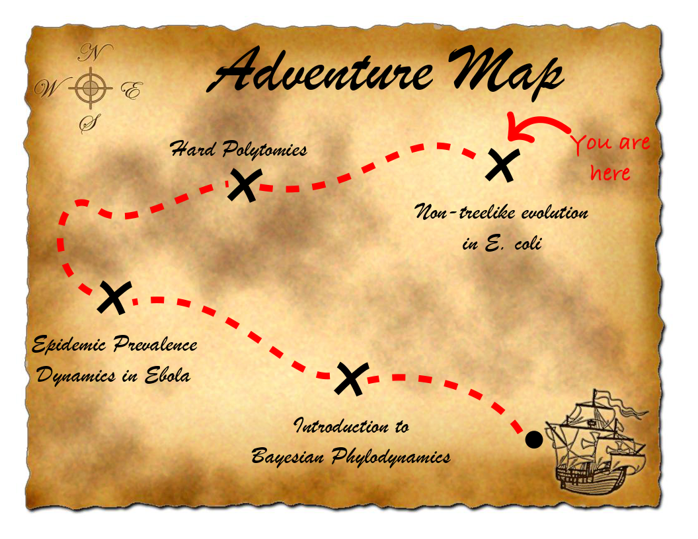
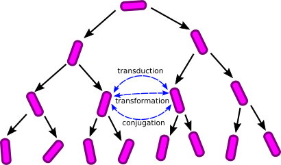
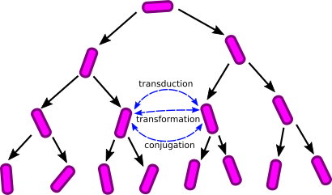
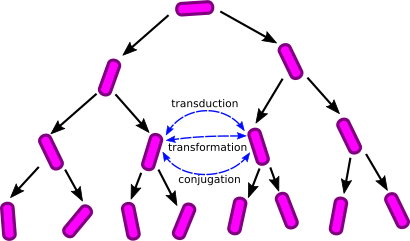
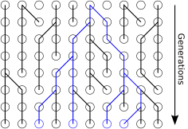
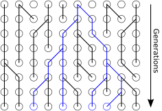

Nonlinear relationship between WHO case counts and genome samples!
Including unsequenced samples
Including unsequenced samples in the particle filtering algorithm is easy: just add additional observations.

Much more efficient than including unsequenced samples on tree explicitly.
EBOV prevalence
EBOV reproductive number
Recap: What are polytomies?
Polytomies are features of phylogenetic trees: internal nodes with more than two children, also known as multifurcations.
These can represent two different things:
Soft polytomies merely represent an inability to resolve the order of speciation/birth events due to insufficient data.
Hard polytomies represent a true or nearly true multifurcation of the parent species/transmission lineage.
We are interested in hard polytomies here.
When may polytomies occur?
Gene tree context:
Some marine species are known to have "sweepstakes reproductive success", meaning that offspring distributions have extremely high variance.
Transmission tree context:
Super-spreading events where single individuals "instantaneously" produce a large number of secondary infections.
Species trees:
Simultaneous speciation events. Has been hypothesized several times in the literature.
Polytomies in sampled trees?
Consider a population in which the distribution for the number of offspring $m$ is such that $P(m>2)>0$.
In complete trees, polytomies will appear whenever the number
of offspring exceeds 2.
In sampled trees, polytomies will occur with vanishingly small probability.
$\implies$ Require offspring distribution such that number of sampled polytomies is significant.
Modelling polytomy generation
Birth-death models:
Augment exsting birth-death models to include higher order birth events:
$$X \overset{\lambda_m}{\longrightarrow}(m+1) X$$
$$X \overset{\mu}{\longrightarrow} 0$$
Coalescent models:
The traditional coalescent excludes polytomies (almost surely). Under the WF model, this is because higher order coalescences occur with probability $O(1/N^2)$ or lower.
The $\Lambda$-Coalescent
Introduced by Sagitov (1999) and Pitman (1999).
Given $n$ extant lineages, each $k$-tuple of lineages undergoes coalescence at a rate
$$\lambda_{n,k} = \int_0^1 x^{k-2}(1-x)^{n-k}\Lambda(dx)$$
where $\Lambda$ is a distribution on $[0,1]$.
Total coalescence rate is therefore:
$$\lambda_{\mathrm{tot}} = \sum_{k=2}^{n}\binom{n}{k}\lambda_{n,k}$$
Regular coalescent corresponds to the case when $\Lambda(x)=\delta(x)$.
The $\Lambda$-Coalescent (ctd.)
Pitman (1999) derived the coalescent rates using a very general argument.
Requires only that the inclusion of lineages in a merger event
is determined by exchangeable Bernoulli trials.
Together with a consistency requirement:
$$\lambda_{n,k} = \lambda_{n+1,k} + \lambda_{n+1,k+1}$$
and de Finetti's theorem, the rates must be those quoted on the previous slide.
Equivalent to selecting $k-2$ of each of the $n-2$ remaining lineages with probability $x\sim\Lambda(x)$.
Note that these "rates" are probabilities conditional on a pairwise coalescence occuring. The event rate per generation is $c_N$: the per-generation pairwise coalescence probability.
The Wright-Fisher Process
Every generation constrained to have the same size.
The Galton-Watson Process
Every individual produces an i.i.d. number of offspring, with $\mathbb{E}[m]>1$.
Constraint: Each new generation is sampled (without replacement) from
the intermediate generation.
The $\beta$-Coalescent
When the probability of $\geq n$ offspring decays as $1/n^{\alpha}$, the
coalescent limit yields (Schweinsberg 2003)
a $\Lambda$-coalescent with:
$$\Lambda(x) = \frac{x^{1-\alpha}(1-x)^{\alpha-1}}{B(2-\alpha,\alpha)}$$
where $B(q,r) = \Gamma(q)\Gamma(r)/\Gamma(q+r)$
This implies that the coalescent rates become
$$\lambda_{n,k} = \frac{B(k-\alpha,n-k+\alpha)}{B(2-\alpha,\alpha)}$$
Taking the limit $\alpha\rightarrow 2$ yields the Kingman coalescent.
Time is measured in units of $N/\sigma^2\equiv N_e$ generations, where $\sigma^2$ is the variance of the offspring distribution.
Example $\beta$-coalescent trees
$\alpha=2.0$ (regular coalescent):
Example $\beta$-coalescent trees
$\alpha=1.5$
Example $\beta$-coalescent trees
$\alpha=1.0$

The $\beta$-coalescent density
Transforming time $dt = dt'/N_e(t')$ allows us to account for population dynamics.
For a given tree, the likelihood for $\alpha$ seems close to true values.
$P(T|N_e,\alpha)$ is the $\Lambda$-coalescent tree prior:
$$\prod_i\frac{\lambda_{n_i,k_i}}{N_e}\exp\left[-\frac{\tau_i}{N_e}\sum_{k'=2}^{n_i}\binom{n_i}{k'}\lambda_{n_i,k'}\right]$$
$P(\mu,N_e,\alpha)=P(\mu)P(N_e)P(\alpha)$ are the parameter priors.
Space of trees with (potential) polytomes $\neq$ space of binary trees.
Need a reversible-jump MCMC algorithm to sample time trees under this model.
Easy BEAUti interface, integrates with other models easily.
Infer $\alpha$ and (parametric) population dynamics jointly together with multifurcating trees.
Help identify superspreading in transmission trees?
Application to Ebola
Again use the 2014-2015 West African Ebola virus data curated by Gytis Dudas et al. (Nature, 2017).
Restrict analysis to oubtreak within the Kailahun region.
How do results from inference under the Beta-coalescent differ from results inferred under classic birth-death models?
Application to Ebola
Tree inferred under stochastic SIR birth-death model.
Application to Ebola
Tree inferred under constant-$N_e$ Beta-coalescent model.
Application to Ebola
Steps necessary for "serious" phylodynamic analyses
Account for structure and population dynamics.
Allow for mixture of offspring distributions:
$$\Lambda(x) = p_0\delta(x) + (1-p_0)Beta(2-\alpha,\alpha)(x)$$
Apply a spike and slab prior to $p_0$: allows for posterior probability
on the presence of non-Kingman dynamics.
These steps are complicated by the dependence of the $\beta$-coalescent timescale
on the offspring distribution through $\alpha$.
Summary
Populations where individuals may occasionally produce a significant portion of the following generation lead to the possibility of observable polytomies in sampled trees.
Bayesian phylogenetic inference under such models can be performed using a reversible-jump MCMC algorithm.
Numerical results suggest that it is possible to recover parameters of the offsping distribution from genetic data.
Analysis of Ebola virus data shows that this model predicts transmission trees with multiple polytomies, although interpretation requires care.
Work in progress: Development of birth-death model
Consider the following birth/death model:
$$X \overset{\lambda_m(x)}{\longrightarrow} (m+1)X$$
$$X \overset{\mu}{\longrightarrow} 0$$
where
$$\lambda_m(x)=\lambda e^{-x}\frac{x^m}{m!}$$
The probability of an individual at time $t$ in the past giving rise to $i$ lineages in the present $p_i(t)$ is:
\begin{align}
\frac{d}{dt}p_0(t) &= -(\lambda+\mu)p_0(t) + \mu + \lambda e^{x(p_0(t)-1)}p_0(t)\\
\frac{d}{dt}p_1(t) &= -(\lambda+\mu)p_1(t) + \lambda(x p_0(t)+1)e^{x(p_0(t)-1)}p_1(t)
\end{align}
Sadly I can find no analytical solution to these. Thus we need numerical integration.

Cartoon bacterial population genetics

Effect of events can be plasmid transfer, insertion or homologous recombination.
Rate of recombination varies and is subject to selection.
Focus on homologous recombination: only event which doesn't alter the length of the sequence.
The Problem for Phylogenetic Inference
For many bacteria, the ratio between the recombination rate and the mutation rate is extremely high.
To conduct Bayesian inference of the full ARG under the ClonalOrigin
model, optionally under non-trivial population size dynamics.
Application to simulated data
True ARG:
Randomly-selected ARG from MCMC:
Application to Escherichia coli
Applied method to sequences from 23 E. coli O157/O26 human and cattle-derived isolates collected by Tessy George (mEpiLab, Massey University, New Zealand).
Isolates included
Shiga-toxin producing strains (+STEC)
non-Shiga-toxin producing strains (-STEC)
Sequences for 53 rMLST genes (21.1 kb total) from each isolate.
Application to Escherichia coli
Software implementations
Each algorithm and model described in this talk is implemented as free software.
Specifically, each is implemented as a BEAST 2 package:
Both packages provide a graphical interface for configuring analyses.
Tutorials available on their respective websites.
Members of the cEvo group have organized a global series of workshops providing instruction on conducting Bayesian phylodynamic analyses using BEAST 2.
Workshops have been held in
Switzerland (twice)
London, UK
Auckland, New Zealand
Sydney, Australia
Squamish, Canada
A workshop in Switzerland will be held next June.
We also maintain a growing collection of BEAST 2 tutorials and instructional material at https://taming.the.beast.org.
Summary
Phylogenetic inference provides much more than a means of inferring phylogenetic trees.
Broadly, these methods provide a means of connecting observed genetic and other forms of data to a large variety of features of the population from which the data is sampled.
Bayesian phylodynamics is the key to many adventures!
Acknowledgements
Epidemic dynamics inference:
Tanja Stadler (ETHZ), Gabriel Leventhal (MIT), David Rasmussen (NCSU),
David Welch and Alexei Drummond (Univ. Auckland, NZ)
Polytomies:
Oliver Pybus (Oxford), Patrick Hoscheit (INRA)
Bacterial recombination graph inference:
Nigel French, Tessy George and Patrick Biggs (Massey Univ., NZ)
David Welch and Alexei Drummond (Univ. Auckland, NZ)
Prof. Tanja Stadler's Computational Evolution (cEvo) group!


 


 
